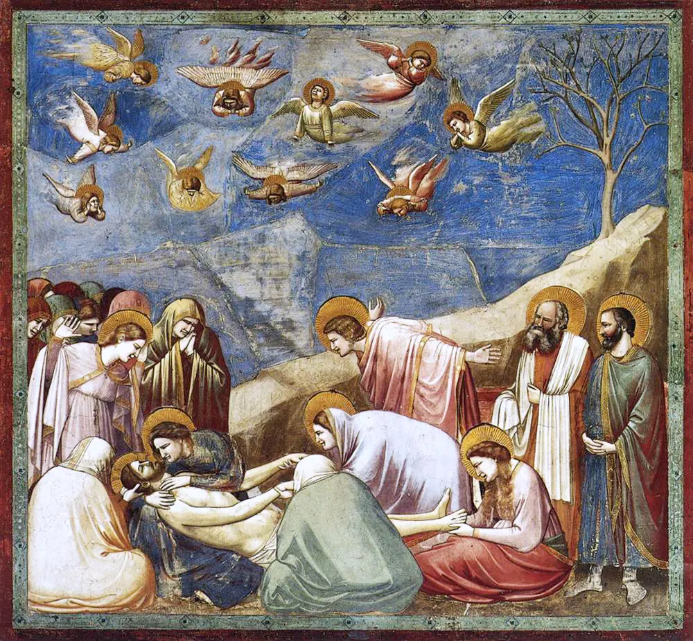
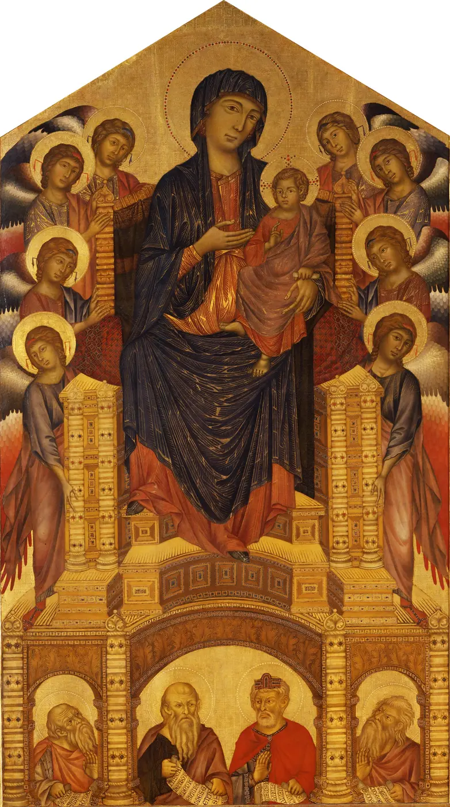
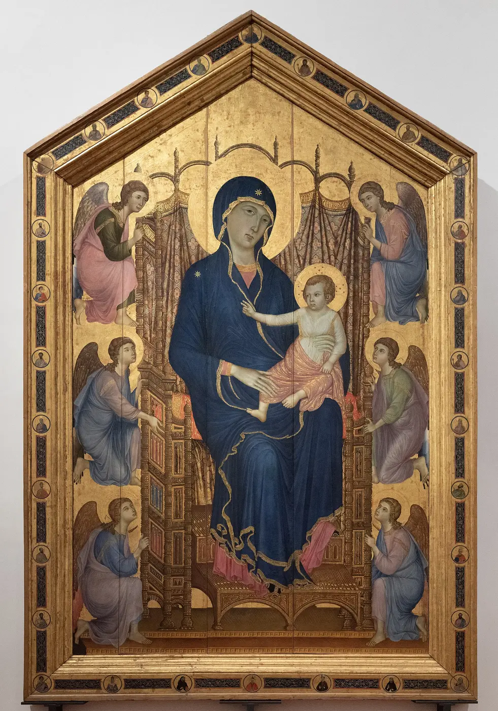
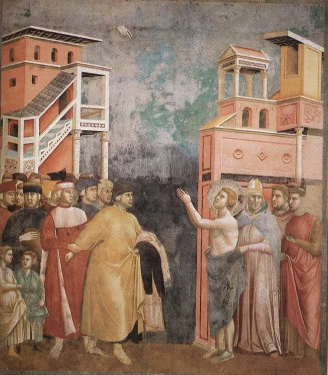
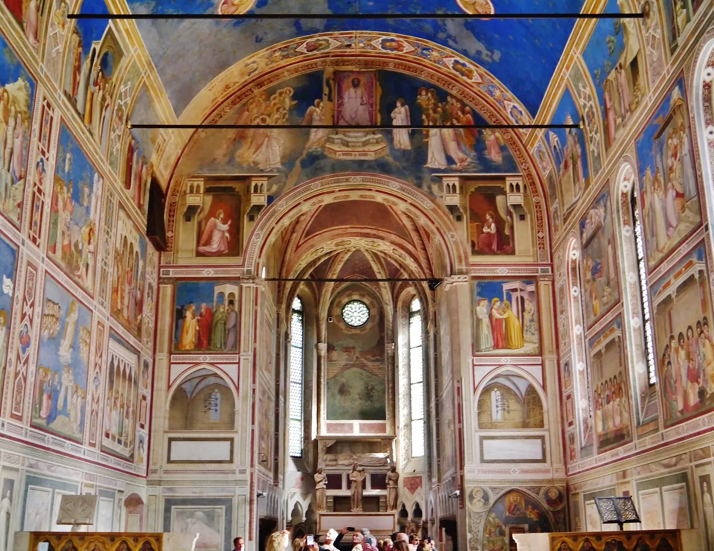
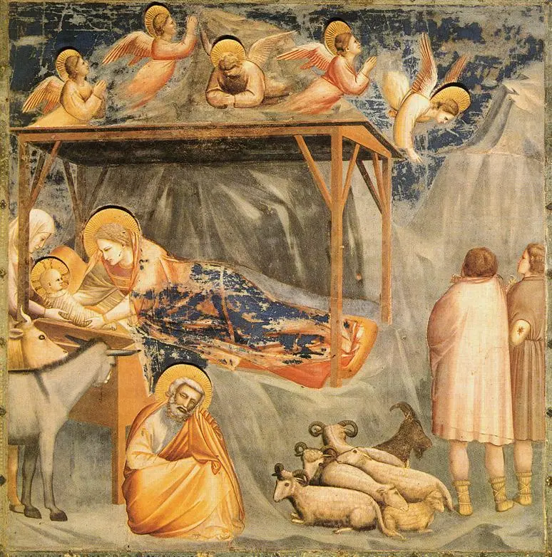
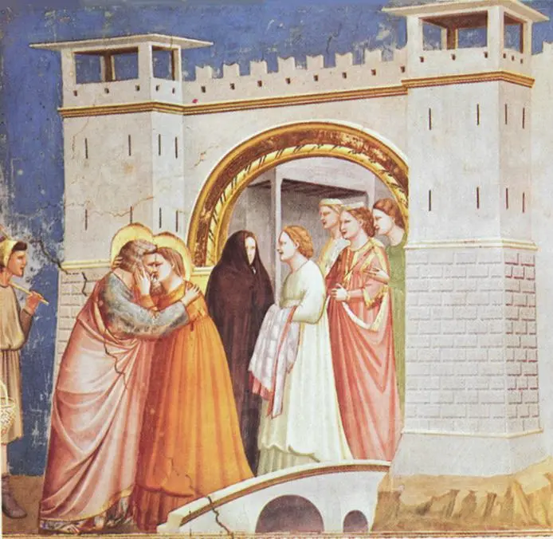
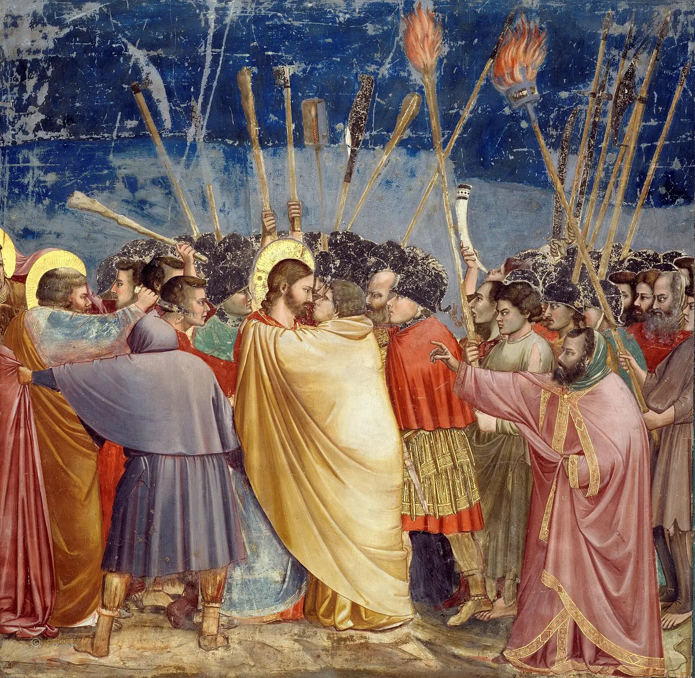

Parete
Una superficie materiale: intonaco, pigmenti, giunti, lacune.
07Giotto · La rivoluzione dello sguardo

01 · Guarda prima di sapere
Dove cade per primo il tuo sguardo?
Quale figura senti più vicina?
I corpi sembrano appoggiati a terra?
La scena ti lascia fuori oppure ti fa posto?
Dalla cattedrale alla scena
Dal modulo 06
La cattedrale organizza il peso reale, la luce reale e il movimento fisico della comunità. Una parete, invece, resta piatta. Eppure può diventare il luogo credibile di un incontro, di un tradimento, di una nascita o di un lutto.
Una superficie materiale: intonaco, pigmenti, giunti, lacune.
Uno spazio rappresentato: piani, volumi, distanze e architetture.
Un corpo reale davanti all’immagine, collocato a una certa altezza e distanza.
Un tempo mentale: ciò che è appena accaduto e ciò che sta per accadere.
Il cambiamento non porta «dalla religione all’uomo». Trasforma il modo in cui il sacro diventa presente: non soltanto icona, ma azione condivisa.
L’Italia delle città, del denaro e dei nuovi pubblici
XIII–XIV secolo · nessuna modernità senza conflitto
Comuni e signorie competono; mercanti, banchieri, notai e corporazioni acquistano peso; ordini mendicanti e confraternite parlano a pubblici urbani; chiese, cappelle e palazzi diventano luoghi di devozione, memoria familiare e prestigio.
Non è una marcia pacifica verso il Rinascimento: guerre, disuguaglianze, debiti e rivalità accompagnano la crescita. Proprio per questo le immagini devono rendere leggibili azioni, responsabilità e conseguenze.
Comuni, famiglie, ordini religiosi, confraternite e corporazioni chiedono memoria e visibilità.
Maestri, assistenti e artigiani organizzano disegno, intonaco, pigmenti, ponteggi e tempi.
Religiosi e laici, élite e cittadini, pellegrini e devoti non vedono tutti nello stesso modo.
Artisti, materiali e soluzioni viaggiano tra Firenze, Siena, Roma, Assisi, Rimini e Padova.
Prima di Giotto non c’è un vuoto
Funzione prima di abilità
La pittura medievale precedente non era «incapace» di imitare la realtà. Organizzava visibilità, gerarchia e presenza secondo funzioni liturgiche e devozionali. Cimabue, Duccio e Pietro Cavallini partecipano a trasformazioni già in corso: Giotto non cade nella storia come un meteorite.



Giotto storico, Giotto leggendario
Documento · attribuzione · racconto
Il giovane pastore che disegna una pecora «dal vero» e viene scoperto da Cimabue è una potente costruzione biografica. Spiega un’idea di naturalismo; non è un verbale contemporaneo.
Dante, Boccaccio e cronache trecentesche attestano quanto presto Giotto diventò il nome del rinnovamento pittorico. La fama è documentata; ogni aneddoto, no.
Fonti antiche collegano Giotto ad Assisi, ma l’autografia del ciclo superiore di san Francesco resta discussa. Stile, tecnica e organizzazione di bottega non danno una risposta unanime.
Un ciclo vasto richiede progetto, giornate di lavoro e collaboratori. «Giotto» può indicare invenzione, direzione e interventi personali entro un’impresa collettiva.

Una cappella come racconto
Padova · 1303–1305
Enrico Scrovegni commissionò la decorazione della cappella dedicata a Santa Maria della Carità. L’usura e la salvezza sono importanti per interpretarne il programma, ma ridurre l’impresa a una sola «espiazione» cancella devozione, memoria dinastica, prestigio e politica urbana.
Dato e interpretazione. La cappella e il ciclo sono documenti materiali; la lettura unitaria del programma nasce dal rapporto fra immagini, liturgia, spazio, committente e pubblico.
Interazione · Sotto il colore
Parete, tempo, bottega
Attiva gli strati nell’ordine. Lo schema è una ricostruzione didattica: materiali e procedure potevano variare, e molte finiture venivano aggiunte a secco.
Scegli il primo strato: la parete dipinta comincia molto prima del colore.
Interazione · Fai abitare la scena
Non una formula, ma relazioni coordinate
Attiva progressivamente cinque condizioni. Nessuna, da sola, produce lo spazio giottesco: è la loro cooperazione a trasformare la superficie in evento.

Laboratorio · Credibile non significa misurato
Osserva le relazioni
Attiva gli indizi sulla scena. Le linee sono sovrapposizioni didattiche: rendono visibili orientamenti, non correggono il dipinto.

L’architettura suggerisce un luogo, ma non tutte le sue linee convergono geometricamente. Chiamarla «prospettiva sbagliata» significa giudicarla con una regola non ancora formulata.
La scena ti fa posto
Il dolore come regia dello sguardo
La roccia scende verso il volto del corpo; gli angeli amplificano il moto; le figure di schiena chiudono il primo piano senza chiuderci fuori. Volti, gesti e masse costruiscono una corrente che porta lo sguardo al centro del dolore.
Questa emozione non coincide ancora con la psicologia individuale moderna. È un linguaggio pubblico dell’affetto: rende leggibile un rapporto e invita lo spettatore a partecipare.
Interazione · Prima il volto o il gesto?
Isola, poi ricomponi
Seleziona ciò che vuoi isolare. Alla fine torna all’immagine intera: il significato nasce dalle relazioni fra viso, mani, postura, distanza e direzione degli sguardi.

Confronto · Prima/Dopo?
Tre Maestà · oggi agli Uffizi
Cimabue, Duccio e Giotto affrontano problemi in parte comuni con soluzioni differenti. Scegli un’opera e una categoria: il confronto mette in luce continuità, funzione storica e limite di una lettura puramente evolutiva.
Ritorno all’immagine iniziale
Non avevi ancora scritto un’annotazione.
13 · Verifica e recupero
Dodici domande, non dodici date. Un errore apre un passaggio di recupero diverso: il percorso riparte soltanto quando il nodo è stato compreso.
Domanda 1 di 12
La soglia successiva
La rivoluzione non consiste nell’abbandonare il sacro né nel copiare improvvisamente la natura. Giotto e la sua bottega organizzano la parete affinché lo spettatore possa prendere parte a ciò che vede.
← Torna al modulo 06Fonti e trasparenza
Le attribuzioni, le date e le letture delicate sono formulate con prudenza. Wikimedia Commons è usato per le riproduzioni, non come fonte storica centrale.
| File locale | Opera / soggetto | Fonte e licenza |
|---|---|---|
| opening-scene.webp | Giotto, Compianto | Wikimedia Commons · Public Domain Mark |
| kiss-of-judas.webp | Giotto, Bacio di Giuda | Wikimedia Commons · pubblico dominio |
| golden-gate.webp | Giotto, Incontro alla Porta Aurea | Wikimedia Commons · pubblico dominio |
| nativity.webp | Giotto, Natività | Wikimedia Commons · pubblico dominio |
| chapel-interior.webp | Interno della Cappella degli Scrovegni | Zairon / Wikimedia Commons · CC BY-SA 4.0 |
| cimabue-maesta.webp | Cimabue, Maestà di Santa Trinita | Wikimedia Commons / Google Art Project · pubblico dominio |
| duccio-rucellai.webp | Duccio, Madonna Rucellai | Gleb Simonov / Wikimedia Commons · pubblico dominio |
| giotto-ognissanti.webp | Giotto, Maestà di Ognissanti | Wikimedia Commons · pubblico dominio |
| assisi-renunciation.webp | Rinuncia ai beni, Assisi | Wikimedia Commons · pubblico dominio; attribuzione discussa |
_adj.jpg){kind=link}
{kind=link}
{kind=link}
{kind=link}
{kind=link}
{kind=link}
{kind=link}
{kind=link}
{kind=link}